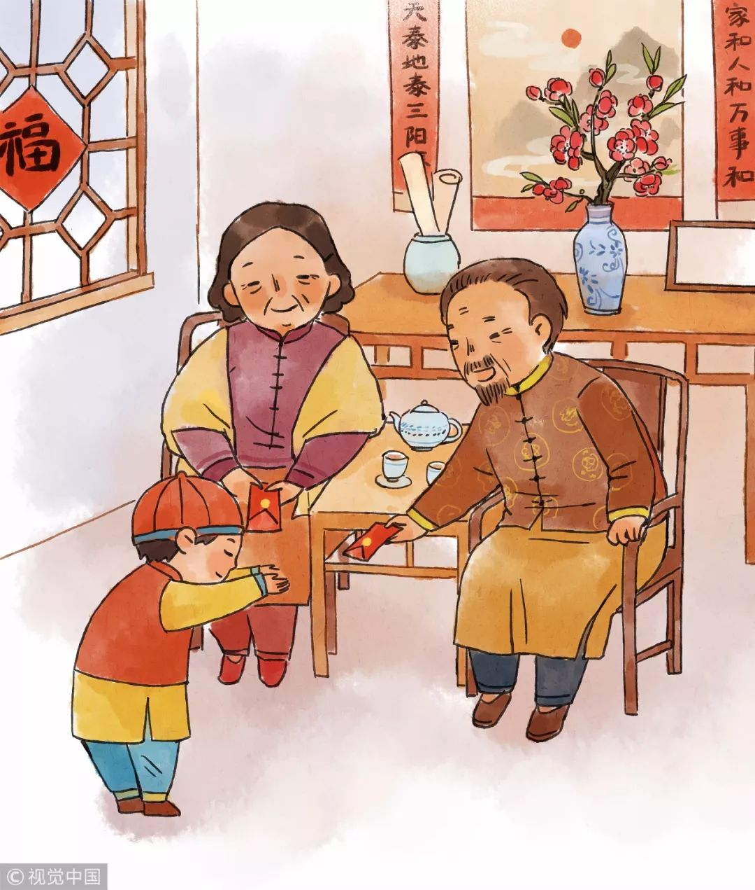
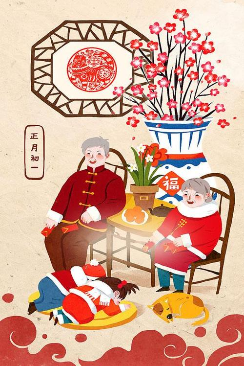

Lucky Money
Red Pocket, also known as Lucky money (" sui "is an unlucky thing.The ancients used this custom to express that nothing unlucky should happen in the coming year.One of the customs of the festival, is sent to the younger generation by the elders, after dinner the elders will be prepared in advance of the New Year's money to the younger generation, it is said that the New Year's money can suppress evil, the younger generation can get the New Year's money to spend a year in peace.Lucky money in folk culture means to ward off evil spirits and ward off ghosts, bless peace.The money was originally intended to ward off evil spirits.
The Legend
Should You Give and/or Receive Red Pockets?
As mentioned above, there are two main kinds of red pockets for Spring Festival.If you are a young or middle-aged adult, you will have to pay for the children and your parents and elders.Regardless of age, the event is usually held among close family and friends.Nowadays, you can give a red envelope to almost anyone.Giving red envelopes to the children of colleagues or superiors is a way to socialize.It's just fun between friends and courtesy between acquaintances.
How to Receive Red Pockets
The red envelope is when you visit in the New Year.Grandparents usually sit at the back of the room.All their children and grandchildren will kowtow.Kowtow (磕头-kē tóu) means to knock on your head (the floor).To do this, kneel down and put your hands on the floor in front of you.Bend down and put your head between your hands.This is the greatest respect for you.Then you can get the red envelope!For children from non-traditional families, there is another way to ask for money. The phrase is: 恭喜发财，红包拿来 (gong xǐ fā cái, hóng bāo ná lái) It means “wishing you wealth and prosperity, hand over the red envelope.” Said with a cheeky grin, it melts hearts and opens up wallets.